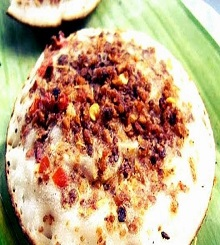

Blog
-

Awug
Salah satu makanan khas Bandung yang sangat dikenal adalah Awug. Makanan khas Bandung ini terbuat dari tepung beras, gula merah, parutan kelapa dan aroma daun pandan. Rasanya begitu legit dan manisnya tidak akan mudah hilang dari lidah anda.
More -

Surabi
Bahan dasar makanan berbentuk bulat yang dimasak dengan kuali dari tanah itu hampir sama. Rasa dasarnya juga sama, gurih, karena unsur kelapa muda atau santan. Bedanya pada bahan tambahan atau topping dan tingkat ketebalan daging surabi.
More
Recent Posts

Goyobod
Es goyobod adalah salah satu nama jenis minuman yang sangat segar. Minuman enak yang satu ini merupakan minuman yang berasal dari daerah sunda dan lebih tepatnya yaitu berasal dari daerah Garut dan Bandung. Minuman segar ini termasuk minuman tradisional yang sangat banyak digemari karena memiliki rasa manis yang begitu segar dan nikmat.
More